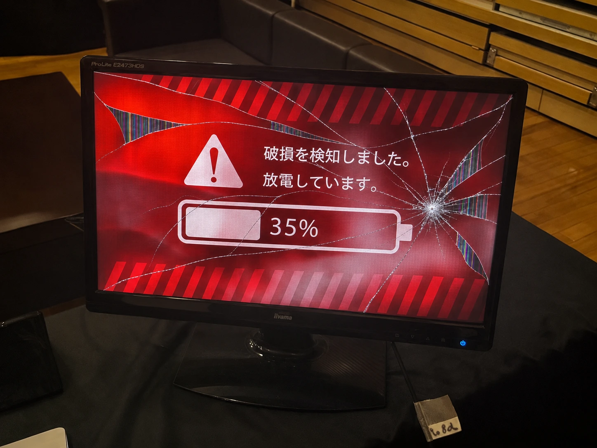
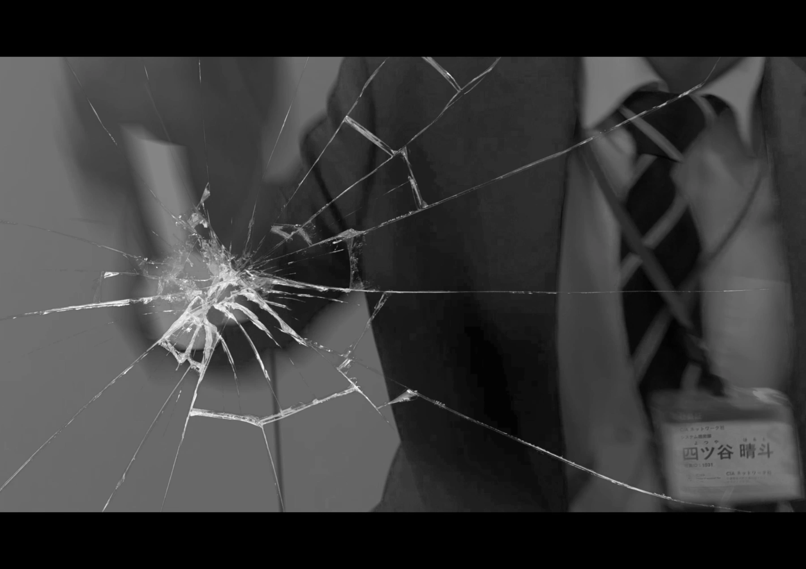

きっかけ
事件のきっかけは、社長・千賀 茂の一言でした。
「お前もTHEMISが来たらクビかもな。」
そう言われたシステム部部長・四ツ谷 晴斗は、高性能PC「THEMIS」に自分の仕事を奪われるのではないかと恐れます。そして、「THEMISさえなくなれば」と考え、破壊を決意しました。
事件当日
事件前日の19時。千賀は出張先からTHEMISに遠隔接続し、正常に動作することを確認しています。
19時10分、四ツ谷は警備室でバールを借りました。警備員の三浦 祐樹は、本人の顔と社員証のIDを確認し、貸出を記録します。
そして19時15分。四ツ谷は社長室でバールを振りかざし、THEMISを破壊しました。
その瞬間、THEMISの安全装置が四ツ谷の姿を撮影。画像は社長室のプリンターへ自動転送され、印刷待ちの状態で保存されました。
破損によって内部の発光液が漏れ、バールの先端にも付着します。同時に、100％だったバッテリーは、1時間につき満充電時の容量の5％分ずつ放電を始めました。
同じ19時15分、一ノ瀬 拓実は売店で買い物をしていました。その記録は購入ログに残っています。
19時20分、四ツ谷はバールを返却。三浦は再び本人の顔と社員証のIDを確認し、返却を記録しました。
翌朝の誤認
翌朝7時30分。同じバールを借りたのが、売店員の二階堂 咲希です。レジ台の引き出しが噛み込み、開けるために必要だったのです。二階堂は発光液に気づかず使用し、8時に返却しました。
そして8時15分。一ノ瀬が社長室を訪れます。千賀から、出張から帰る前に掃除しておくよう指示されていたためでした。
壊れたTHEMISを見た一ノ瀬は、驚いて壁にぶつかります。その物音を聞き、帰社したばかりの千賀が駆けつけました。
昨夜は正常だったTHEMISが壊れ、そのそばには一ノ瀬がいる。千賀は、今の物音が破壊音だったと思い込み、通報します。一ノ瀬は否定しますが、犯人と疑われて逮捕されてしまいました。
発見直後に千賀が撮影した画面には、バッテリー残量35％が写っていました。

残された証拠
一ノ瀬の弁護を引き受けた皆さんは、社内の謎を解き、資料や記録を調査しました。
取扱説明書と残量写真を照らし合わせると、65％の放電にかかった時間は13時間。破壊されたのは、発見された朝ではなく、前日の19時15分だとわかります。その時刻には、一ノ瀬の売店での購入記録がありました。
さらに、発光液がブラックライトで光るという資料から、バールが凶器だと推理できます。二階堂が借りたのは破壊後。犯行時刻に借りていたのは四ツ谷でした。
最後に社長室で写真を印刷すると、そこにはバールを振りかざす四ツ谷の姿が写っていました。

朝の物音は、事件が起きた音ではありません。真犯人の証拠は、壊されたTHEMIS自身が残していたのです。